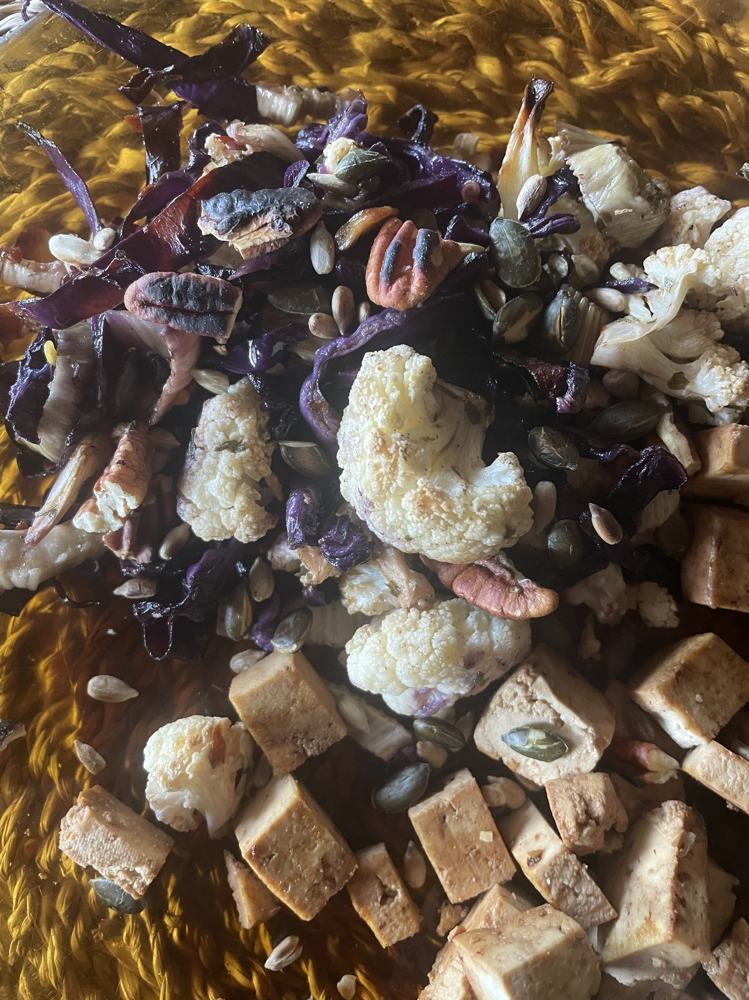

Hinojo, col lombarda y coliflor al horno con peperoncino, ajo y perejil
Ingredients
2×
- 1 hinojo
- 0.25 de col lombarda
- 0.5 coliflor
- 2 dientes de ajo
- 1 puñado de perejil
- 1 pizca de peperoncino
- 3 cdas de aceite de oliva
- sal
- tofu
- semillas

Preparación
Paso 1
Cortar 1 hinojo en gajos, 0.25 de col lombarda en tiras y 0.5 coliflor en ramitos.
Paso 2
Picar 2 dientes de ajo y 1 puñado de perejil y mezclar con 1 pizca de peperoncino y 3 cdas de aceite de oliva.
Paso 3
Aliñar las verduras con la mezcla y sal, y hornear 30min a 200ºC. Servir, si se quiere, con tofu dorado y semillas.